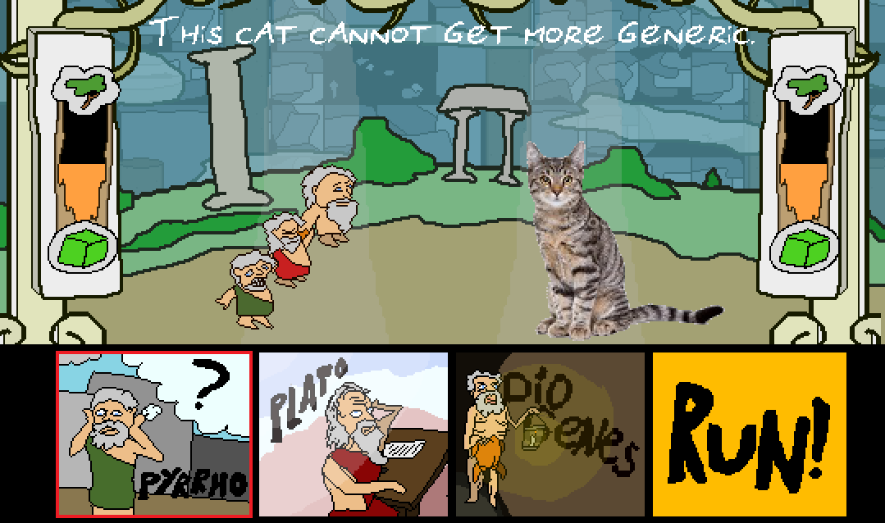
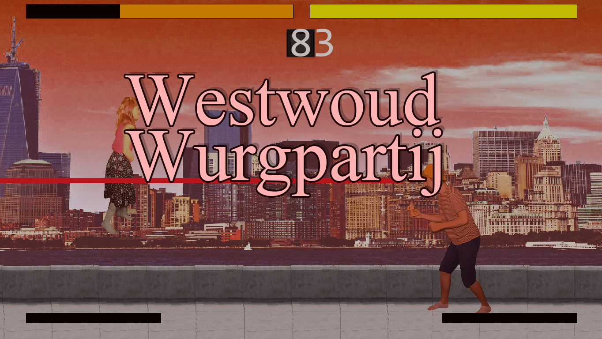
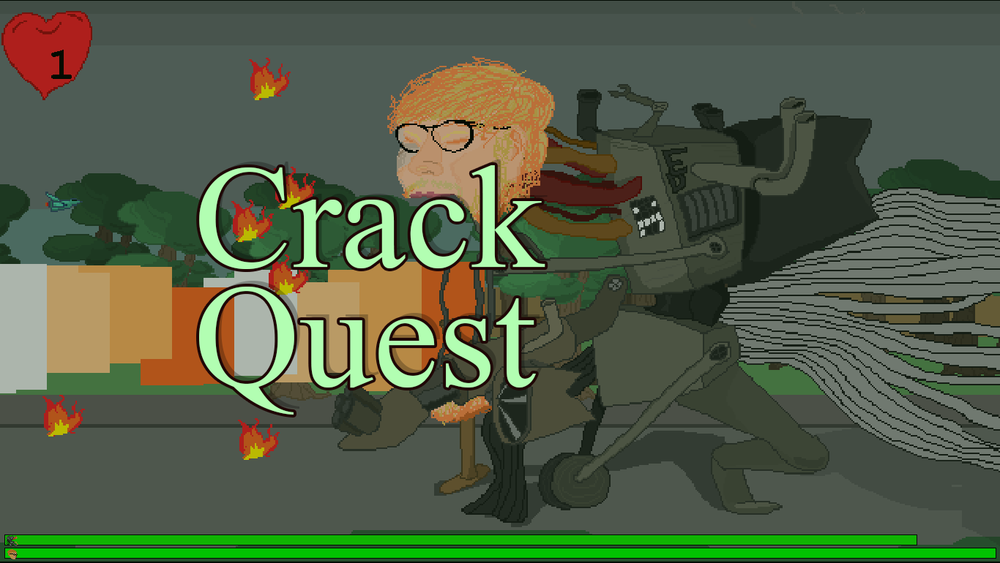
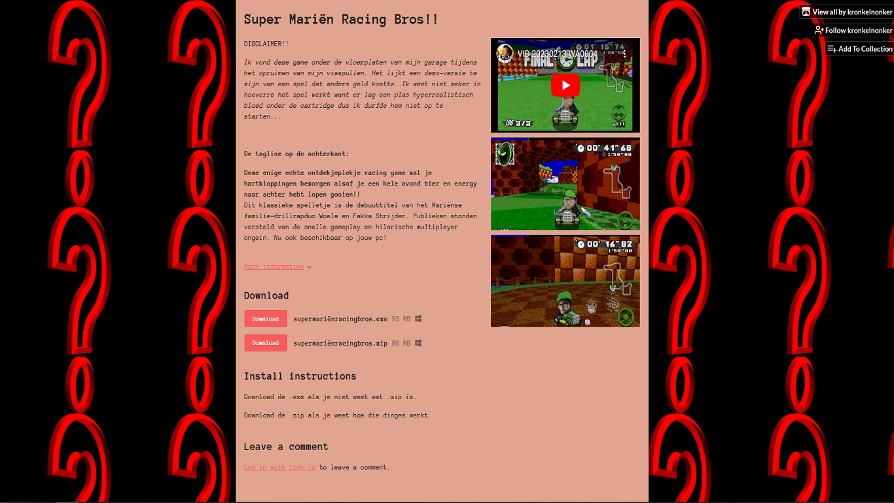

Beard Bros
During my time as a Philosophy student, I became intrigued in the various Greek Philosophers and figured it would be funny if there were some kind of role-playing-game with philosophical arguing as its main way of combat. I got quite far into programming the basics for this game and I'm planning to work more on this at a later time. Stay tuned!!

Westwoud Wurgpartij
Fight as one of two (2!!!!) fighters in this hyper-realistic fighting game. This game can only be played with TWO players since I haven't programmed any AI players.
An experiment involving a greenscreen and very compressed realistic graphics in order to be able to make a fighting game without having to manually animate sprites. I really like how it turned out but I reached the cap of my very light programming skills, hence this ended up unfinished.
The only playable characters are my sister and I.

Crack Quest
A game about a daring ace pilot and his control-tower colleague taking on mechs created by an evil pop-star witch. The game includes 2 stages, both of which have you take on an especially dangerous foe, The gameplay involves navigating a small ship through a field of bullets (see: shoot-em-up/bullet hell). Music has been partially made by myself, partially stolen from various videogame ost's
This game went unfinished because I wanted to move on to other projects.

Super Mariën Racing Bros
A joke-game I made in 1 week to prank my friends. The game is marketed as a racing game (a title which me and my friends have been joking about for a long time), but the actual game is an esoteric quest to find the "Gu" in several "Where's Waldo"-like canvases.
"Ik vond deze game onder de vloerplaten van mijn garage tijdens het opruimen van mijn visspullen. Het lijkt een demo-versie te zijn van een spel dat anders geld kostte. Ik weet niet zeker in hoeverre het spel werkt want er lag een plas hyperrealistisch bloed onder de cartridge dus ik durfde hem niet op te starten..."